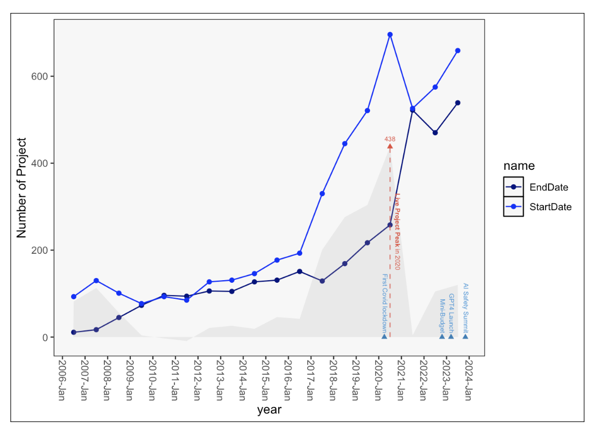
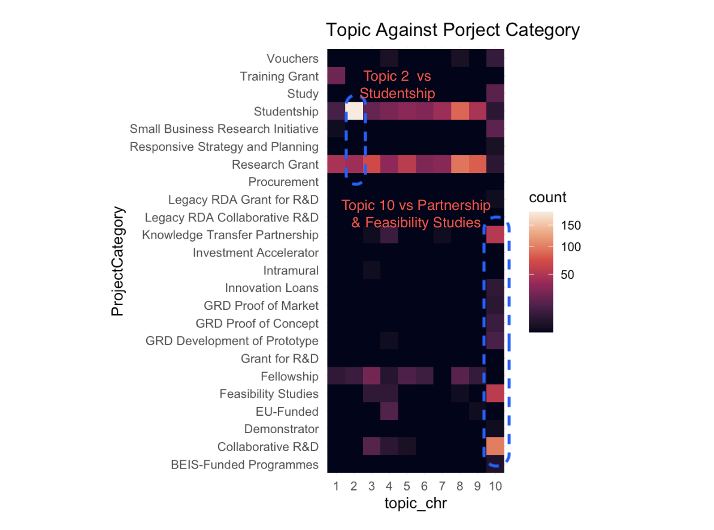

| id | abstractText |
|---|---|
| FB05923A-042B-4277-AC29-67C973193C09 | My PhD project addresses the important issue of how tensors (multidimensional data structures) can be employed for making sense of Big Data recorded across numerous domains in today's connected world. Namely, the proliferation of big, multidimensional data has created an ever-growing demand for innovative techniques to process such data in a computationally efficient and physically meaningful w... |
| E01EBC26-C27E-449B-ABEC-937373F604A9 | Proteins are the workhorses of the cell, but despite significant advances in our understanding of the physical and chemical principles underlying their structures and functions, one fundamental property - protein mechanics - remains poorly understood. Mechanical forces are involved in varied biological processes such as force-bearing proteins in the muscle and tension upon chromosomes separatio... |
Public Funding for Artificial Intelligence
2024-03-03
Overview
- Walk you through of exploratory text analysis for research england (UKRI Research and Innovation), which can access this from my GitHub Page

- Some text analysis. Include usage of “Topic Model”
- Sharing some insights
- Discuss potential of this analytic for researchers and funding bodies.
Data Source: GTR Project Description

The Data
- 5175 project descriptions contains term “artificial-intelligence” can be accessed using GtR api
Data Source: Additional Meta Data

The Data
By just search website
| Title | FundingOrgName | ProjectReference | LeadROName | Department | ProjectCategory | StartDate | EndDate | AwardPounds | ExpenditurePounds | Region | Status | id |
|---|---|---|---|---|---|---|---|---|---|---|---|---|
| Unravelling Enter... | BBSRC | BB/W020491/1 | Animal and Plant Health Agency | Food and Environmental Safety | Research Grant | 2022-05-17 | 2023-07-17 | 200860 | NA | North West | Closed | A25812AC-5977-4AA5-BE67-63D335DEE63E |
| Artificial Intell... | Innovate UK | 105048 | CATCHAPP LTD | NA | Feasibility Studies | 2019-04-01 | 2019-12-31 | 78057 | NA | London | Closed | 1B765215-F6C4-4773-A1B6-8089729A82AE |
| Classifying Advan... | Innovate UK | 84000 | DIGITAL INTERRUPTION LIMITED | NA | Collaborative R&D | 2020-11-01 | 2021-04-30 | 95138 | NA | North West | Closed | F0ACB6F0-01A9-4367-9867-04632E97F6B3 |
- Project Start Date
- Award amount (£)
Project Trend Overview



Keyword Mentions
## function for tokenise target fiel
tokenize_words_group = function(df, col, group_col) {
df |>
# preserve chained keywords
mutate(text_field = str_replace({{col}},
'(A|a)rtificial (I|i)ntelligence',
'artificialintelligence') |>
str_replace("machine learning",
'machinelearning')
) |>
unnest_tokens(word,text_field, token="words") |>
anti_join(stop_words,"word") |>
mutate(word=str_replace(word,'artificialintelligence','artificial-intelligence') |>
str_replace('machinelearning','machin-learning')
) |>
group_by(word, {{group_col}}) |>
summarise(n_prj = length(unique(ProjectId)), .groups="drop" ) |>
arrange(desc({{group_col}}),desc(n_prj)) |>
ungroup()
}Insights
What is Topic Modeling
- The process of Extracting Themes from large document
- Frist step in topic modeling is convert text into document-term matrix
- Topic Model Algorithm such as LDA compares similarity between document by comparing propotion word frequencies.

Topic Against Funding Type

Topic 2 & 10